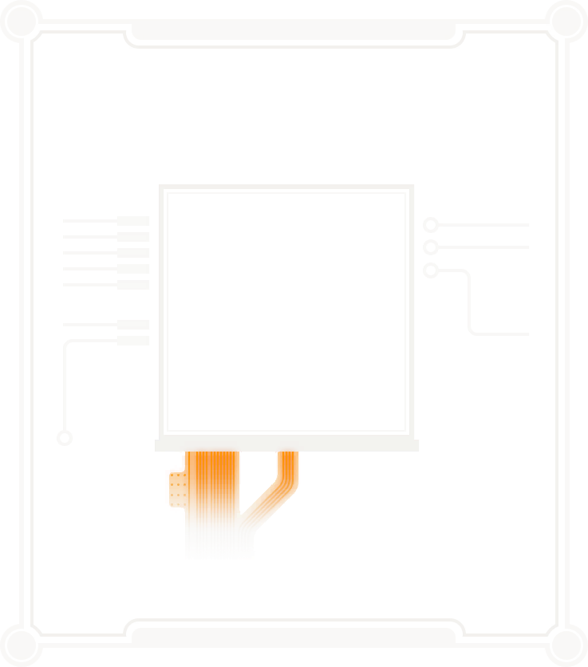
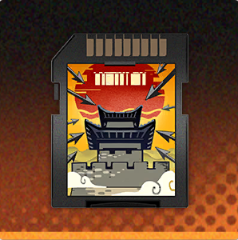
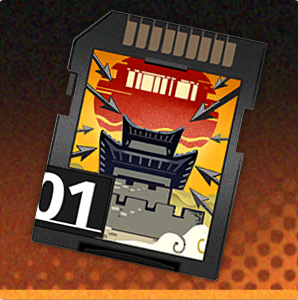
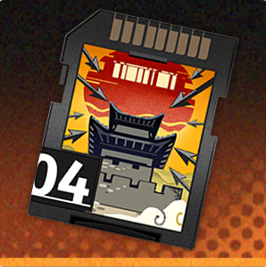

002 スレイT

ID002
スレイT

2セット効果
HPが20%上昇する
4セット効果
受けるダメージが8%低下し、被相性ダメージ時、受けるダメージが追加で8%低下する。
実装バージョン
1.0.0


スレイT01
| 基本ステータス | ステータス(初期値) | ステータス(最大値) |
|---|---|---|
| 攻撃 | 14 | 156 |
| 物理防御 | 94 | 1018 |
スレイT02
| 基本ステータス | ステータス(初期値) | ステータス(最大値) |
|---|---|---|
| 攻撃 | 14 | 156 |
| 特殊防御 | 94 | 1018 |
スレイT03
| 基本ステータス | ステータス(初期値) | ステータス(最大値) |
|---|---|---|
| HP | 141 | 1526 |
| 物理防御 | 47 | 509 |
スレイT04
| 基本ステータス | ステータス(初期値) | ステータス(最大値) |
|---|---|---|
| HP | 141 | 1526 |
| 特殊防御 | 47 | 509 |
固有特性
| 名称 | 効果 |
|---|---|
| 抵御 | 被相性ダメージ時、受けるダメージが2.4%/4%低下する。 |
| 装甲 | 受ける単体ダメージが1.2%/2%低下する。 |
| 活性自癒 | 被相性ダメージ時、50%の確率で自身の最大HP0.96%/1.6%に基づき定量治療を行う。スキル内で最大1回まで発動する。 |
| 堅壁 | 受ける範囲ダメージが2.4%/4%低下する。 |